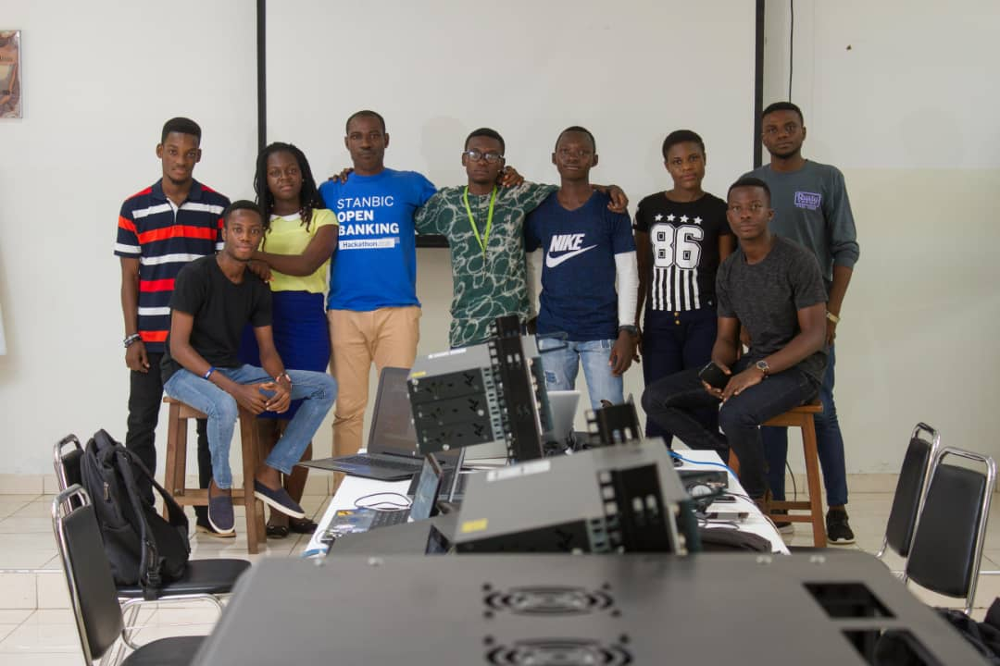

This is the Information Technology age and at its core
is Computer Science. The study of computer science is
therefore critical if society is to take full advantage
of the benefits Information Technology has to offer and
make rapid economic advances. Computer science involves
the study and development of applications that allow for
our everyday use of computers, the software systems that
support these applications, and the means and methods used
to produce both applications and systems that behave reliably,
correctly and ethically. At the heart of Computer Science lies
the skill of computer programming and employers who hire Computer
Scientists expect adept programmers with knowledge of current
techniques and tools and the ability to apply sound engineering
principles to the development, construction and maintenance
of computer programs.
The range of courses available in the department and
the skills acquired by students enable them to find
employment in many diverse fields of the economy and
prepare our graduates for the computing industry, working
in a project team (or research and development team), and
to enable the graduate to bring specialist skills to that
team. The course also provides the platform for further
study or research through exposure to established and
emerging technologies and methods, and to active fields of
research in Computer Science.
The Department offers two undergraduate degree programmes,
Bachelor of Science in Computer Science Single-Major
(3:2:1:1) and Major-Minor (3:2:2:1) as well as Bachelor
of Science in Information Technology.
Things get interesting because you are eager to know more , or you become eager to know more because it is interesting?
 |
Our Organization The University of Ghana is one of the Africa's most preeminent public universities. Our impact on individuals, our region and the world is profound. whether we are launching young people into a boundless future or confronting the grand challenges of our time through dauntless research. UG educates more than 38,000students annually, with approximately 2.64% being computer science students. We turn ideas into impact and transform the world around us. For more about our impact, visit our news site, UG News. |
Our Community If you are inspired by a big challenge, you've come to the right place! The computer science community at the univrersity of Ghana encourages it's people to be vibrant and brave in taking on new challenges that push boundries beyond imagination. |
 |
 |
Distance Learning Experience a UG-CDCD classroom from wherever you are. Take advantage of real-time lectures and personal interaction with professors through a suite of online delivery options, customizing your degree to fit your schedule. Our online classroom maintains the same level of academic rigor, while providing students with more ways of learning. |
Building Our Future So what defines our students, faculty and community members? Above all, its our belief in the infinite possibilitie and our unshakable optimism. Its a connection to others near and far. A hunger for socio-economic transformation that pushes us to tackle challenges and pursue progress. Its the conviction that together we can create a world of good. Join us on the journey. |